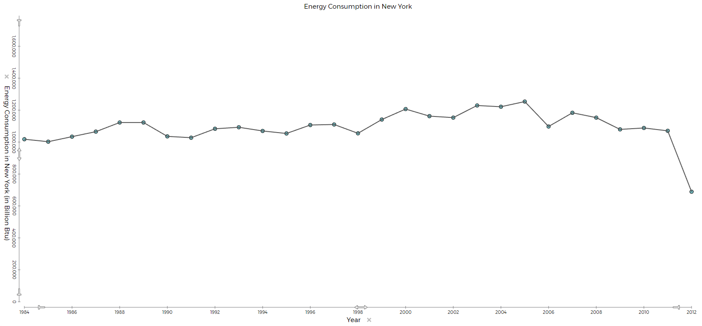
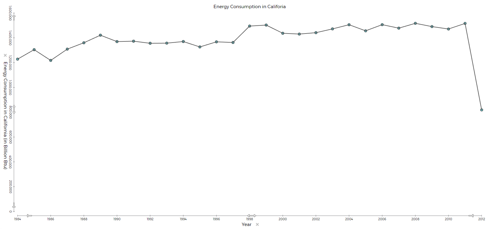

The correlation between the costs of electric in NY and CA is very close, and all seems pretty normal,
up until later in the graph, the power usage cuts drastically. Nobody in our group could really figure out why,
but we have come up with a few hypotheses. The only reasons that power costs could drop is either A
(more suppliers of electricity, cheaper to use in result), or B (the economy is dying and electricity is
dying and the US will become a wasteland). One of those is better than the other.
In order to gather our data, we had to first find datasets. The website we used to
find the datasets is TuvaLabs.com. we first explored the different datasets, and came
up with the question “How does energy consumption differ from different cities over the years.
From there, we got the graphs from the datasets and proceeded to make the custom graph (that andrew, dident do, it was his one job).